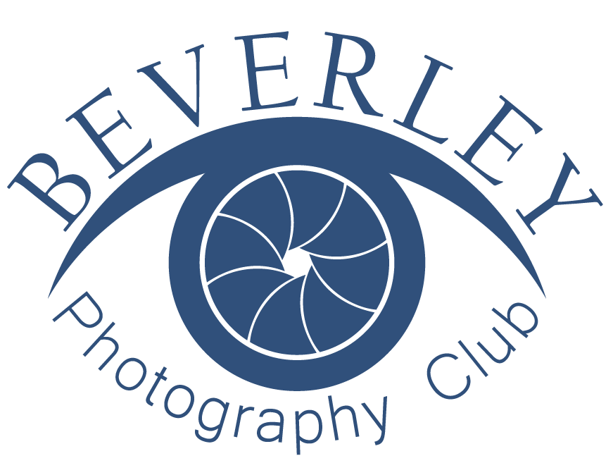

Welcome to the official website of Stanford University Photography Club!
Our Mission
Our mission is to cultivate a vibrant community of passionate photographers, from beginners to professionals, who are dedicated to capturing moments that tell stories, inspire creativity, and preserve memories. We aim to provide a platform for students to explore the art and science of photography through hands-on experiences, workshops, photowalks, exhibitions, and collaborative projects. Through the lens, we strive to celebrate diversity, document campus life, and express unique perspectives — all while fostering a spirit of learning, innovation, and artistic excellence.
What We Do?!
- Weekly Photography Walks Around Campus
- Photo Editing Workshops
- Monthly Photographic Contests
- Guest Speaker Sessions with Professional Photographers
- Annual Photography Exhibition
Club Information
| Meeting Days | Time | Locations |
|---|---|---|
| Every Friday | 3:30 - 4:30 | Main Auditorium |
| Every Monday | 2:00 - 3:00 | Photography Lab (Room B-12) |
| First Wednesday of Month | 1:00 - 2:30 | Media Center |
| Last Saturday of Month | 10:00 - 12:00 | Outdoor Photowalk (TBD) |
Join Us
Join Us – Capture the World Through Your Lens!
Are you passionate about photography? Whether you're a beginner exploring your first camera or an experienced photographer looking to refine your skills — the University Photographic Club is the perfect place for you!
Learn new techniques
Explore creative themes
Collaborate with like-minded artists
Participate in exciting events, contests, and exhibitions
Join us every Friday at 3:30 PM in the Main Auditorium
Let your creativity shine and be part of a community that sees the world differently — one frame at a time.
All students welcome! Just bring your curiosity and camera (or phone!)